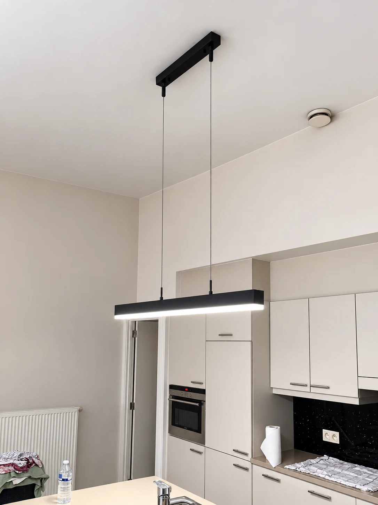
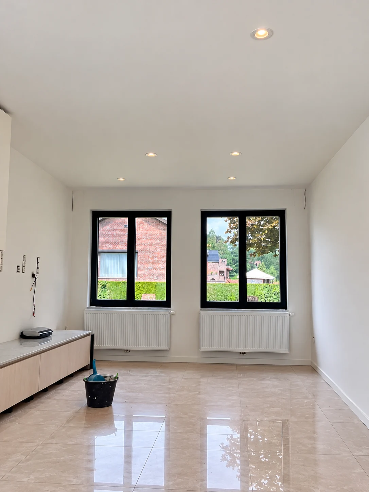
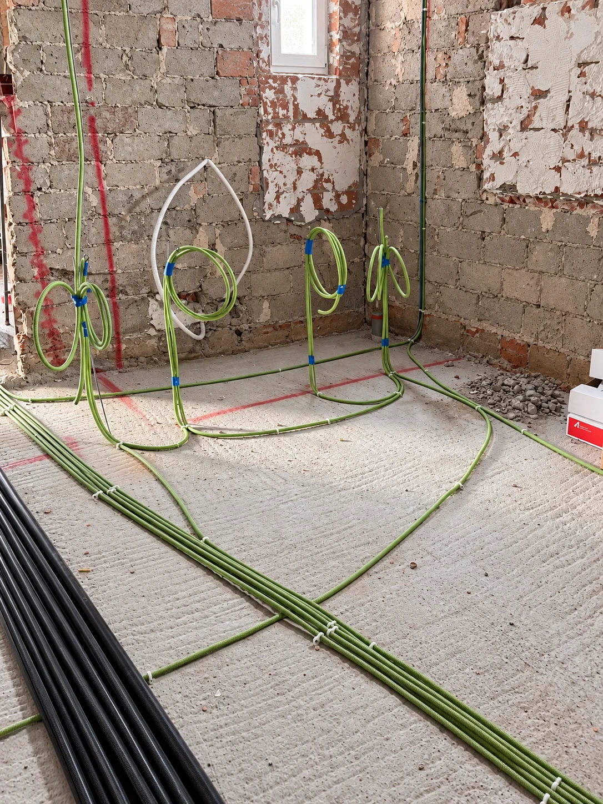
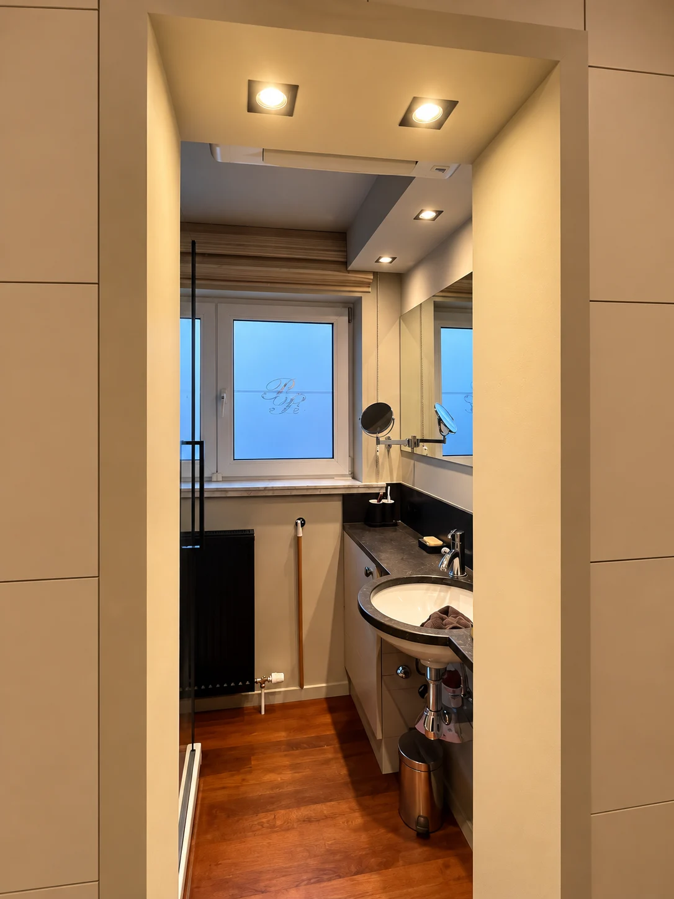
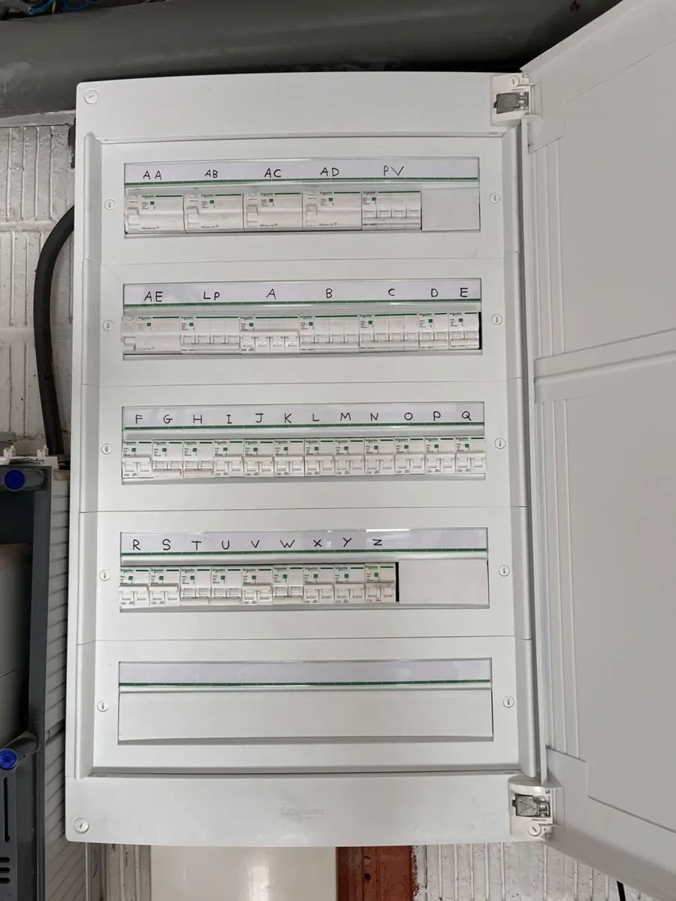
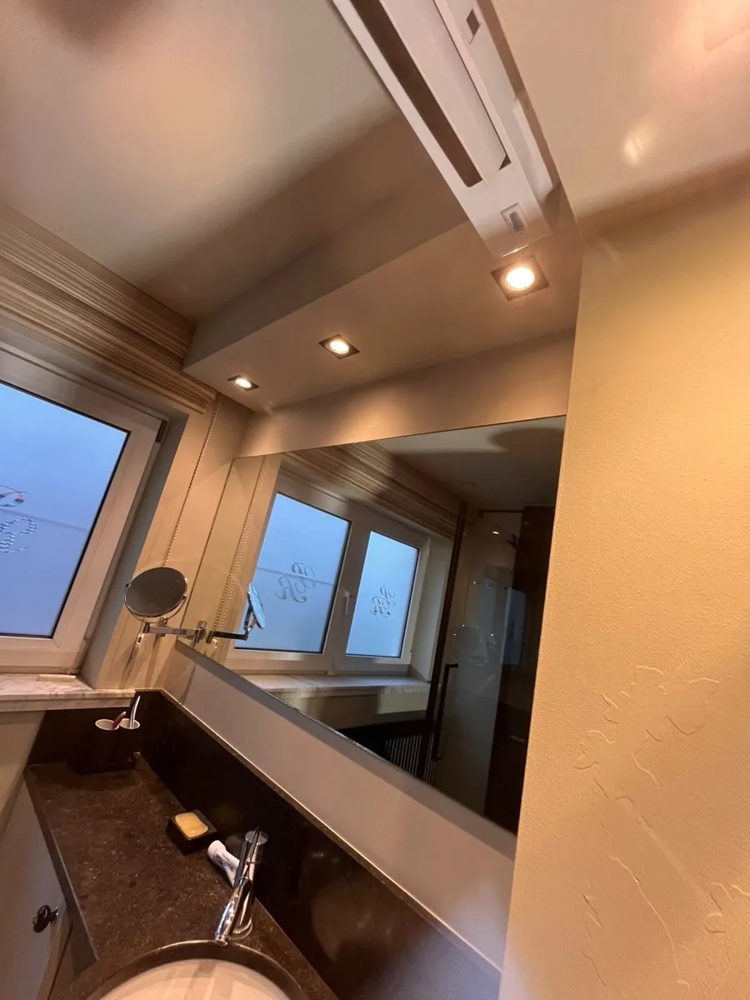
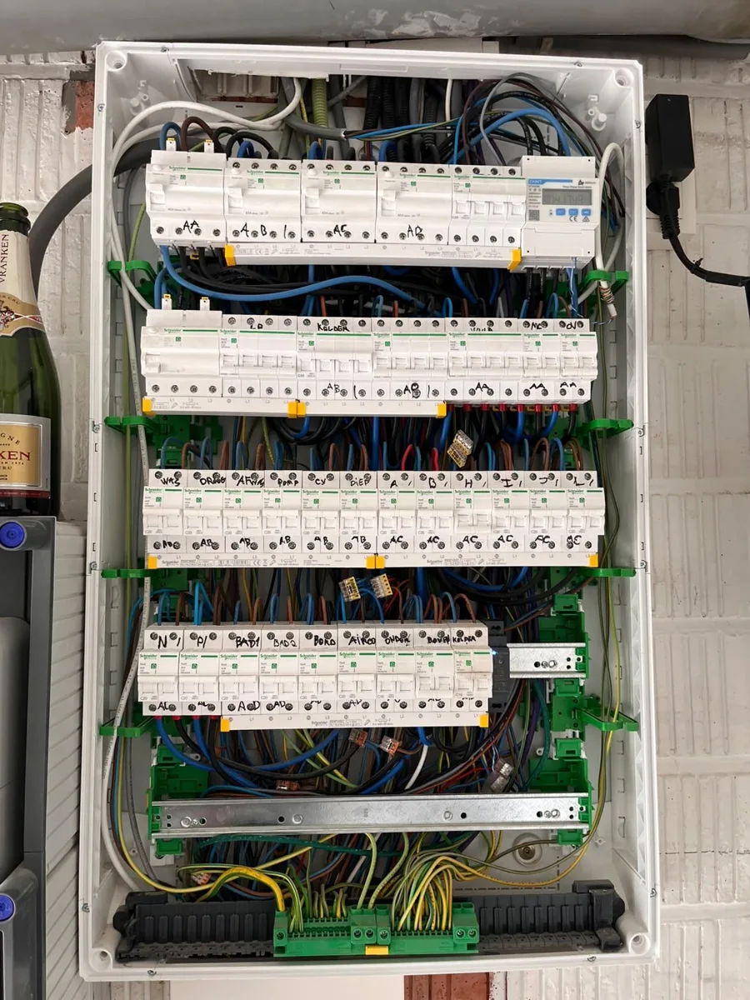

Realisaties / Kreemers Elektro
Aangesloten
door Max.
Foto’s van mijn werk: verlichting, verdeelborden en leidingen. Je ziet afgewerkte installaties, maar ook wat eraan voorafgaat.
Verlichting & elektrische installaties
01 / Uitgelicht
Odette
Lunettes.
Bij Odette Lunettes sloot ik het neonbord aan. Op de foto zie je het bord onder stroom.
Bekijk het detail
Verlichting en installaties

Railverlichting
Spots op een plafondrail.


Keukenverlichting
Een hanglamp boven het keukeneiland.

Tot in de bedrading
Een blik in het verdeelbord.

Laness Studio
Verlichting aan een handelspand.


Inbouwverlichting
Spots in een afgewerkte ruimte.


De eerste leidingen
Wachtbuizen klaargelegd voor de chape.


Badkamer & nachthal
Inbouwspots in badkamer en nachthal.


Overzichtelijk afgewerkt
Een afgewerkt en gelabeld verdeelbord.


Spots & afwerking
Verlichting in een nieuwbouwinterieur.


Werk in uitvoering
Bedrading van een verdeelbord in nieuwbouw.
Nieuwbouw, renovatie of domotica